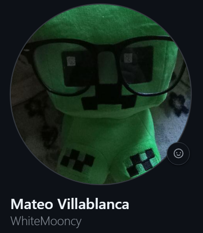

Hola, soy Matteo
Soy estudiante de Programación y desarrollador web. Me encanta crear sitios web atractivos y funcionales que brinden experiencias excepcionales a los usuarios y desarrollar soluciones integrales.

Acerca de Mí
Soy estudiante de AIEP en mis últimos semestres en Programación y analisis de sistemas. Apasionado el desarrollo web y la ciencia de datos.
| Educación
Instituto Profesional AIEP (Academia de Idiomas y Estudios Profesionales) de San Felipe
Programación y analisis de sistemas
Actualmente estudiando
| Experiencia
"desarrollador y analista"
La administración y mapeo de datos relacionados con maquinas virtuales en la empresa Emtec Group
enero del 2025 - febrero 2025
| Habilidades Técnicas
HTML
CSS
Boostrap
Java
Python
PHP
C#
MySQL
SQL Server
Git
GitHub
XAMPP